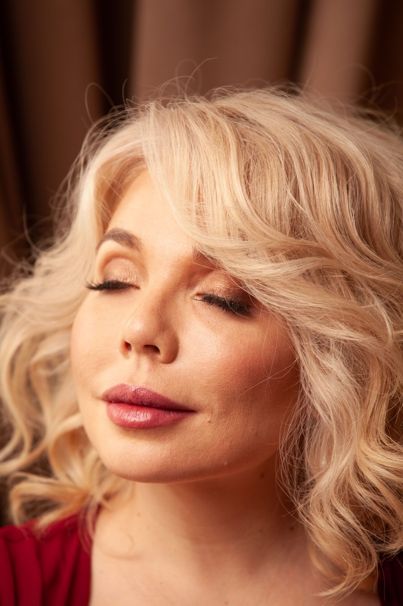
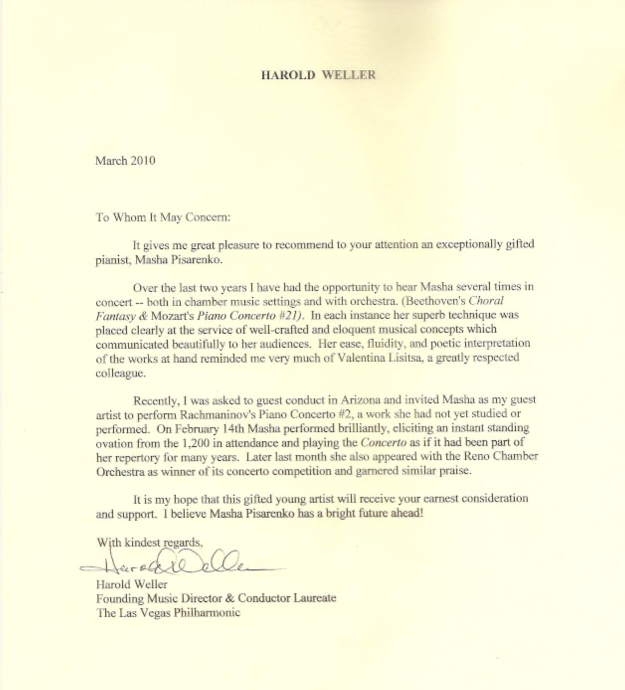
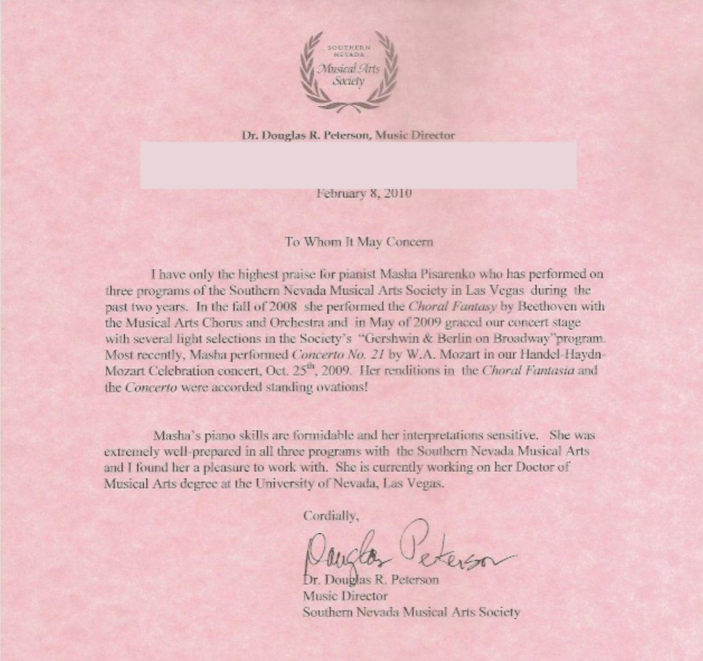
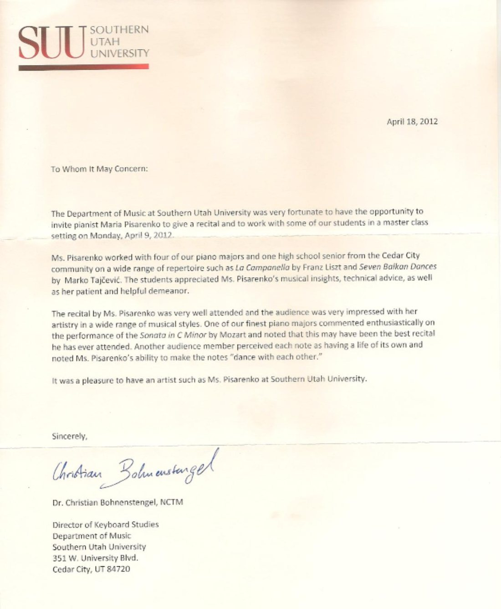
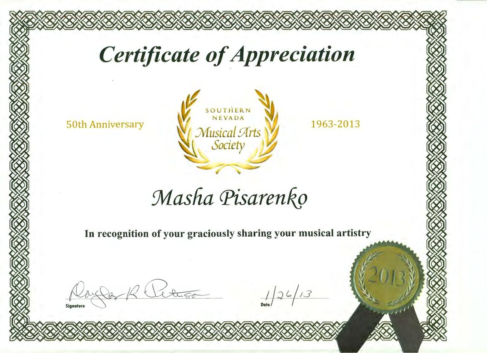
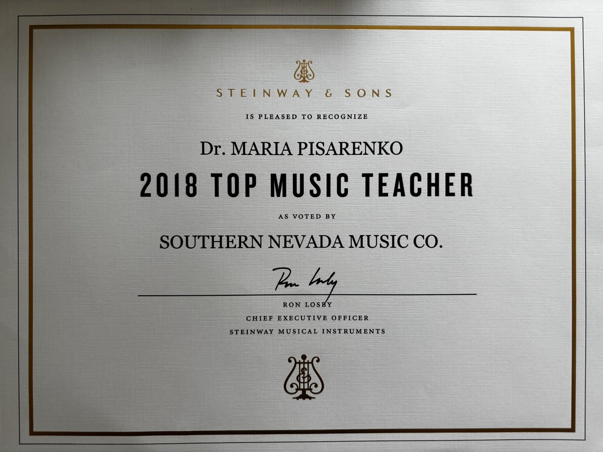
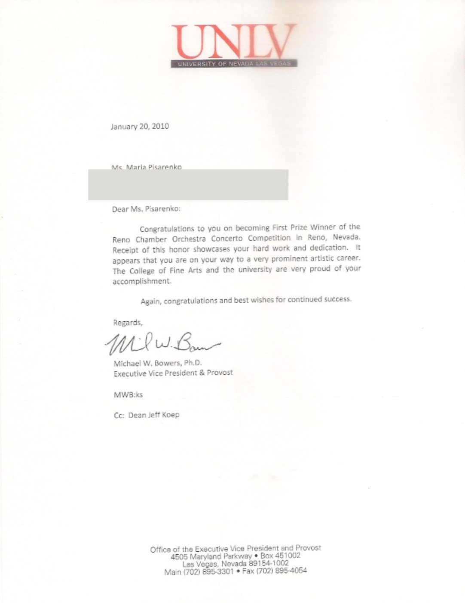
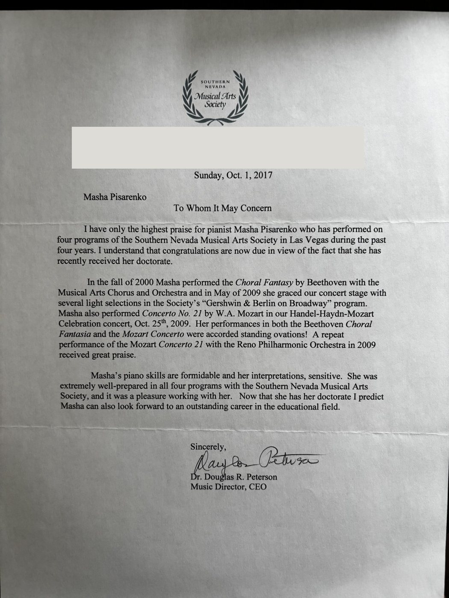
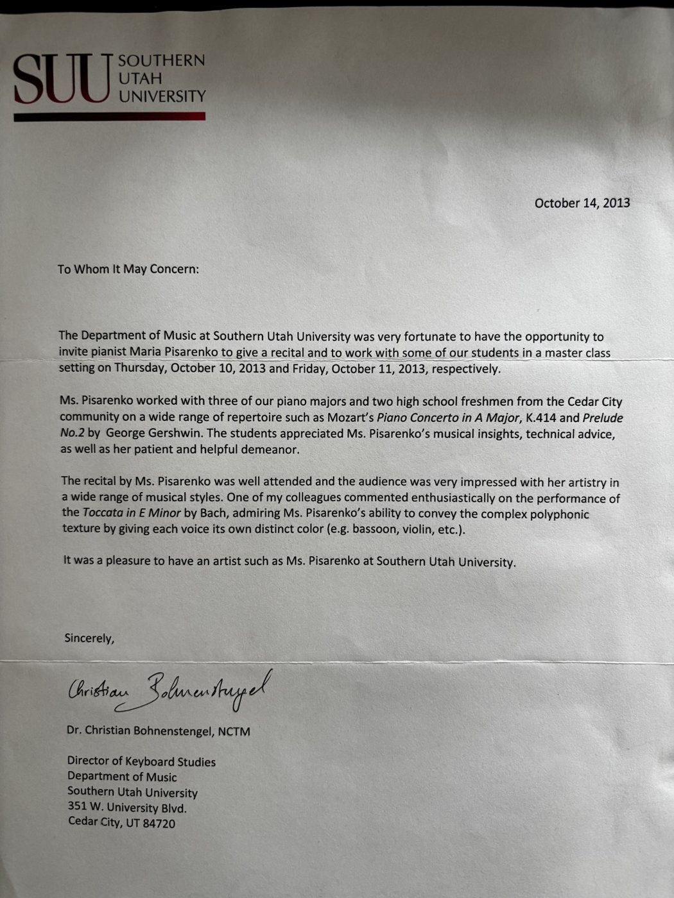

“A mature, highly experienced performing artist… can render the sincere emotion and deep feelings of the composers.”
Send the date and a line about the occasion and I will reply myself — with a programme suggestion and a quote.
Recognized as a child prodigy in Siberia, Maria Pisarenko began piano at five, gave her first solo recital at seven, and appeared as a concerto soloist with symphony orchestras by eight. After top honors at the First International Tchaikovsky Youth Competition in Moscow, she was invited to the Central Music School of the Moscow Tchaikovsky Conservatory — the heart of the legendary Russian school of piano.
She earned degrees in Piano Performance, Pedagogy and Collaborative Piano from the Gnesins Russian Academy of Music, and a Doctor of Musical Arts from the University of Nevada, Las Vegas — alongside a Ph.D. in Linguistics.
Maria is a bearer of the golden Russian piano school — the tradition of Heinrich Neuhaus, Alexander Goldenweiser, Tatiana Nikolayeva and Maria Yudina — carried to her directly through her own teachers. Her formative teacher at the Central Music School was Manana Kandelaki — a pupil of the legendary Tatiana Nikolayeva — and during those years she studied regularly with Ilya Klyachko, a pupil of Alexander Goldenweiser. Nikolayeva, too, was Goldenweiser's student, so Maria's training descends to him along two independent lines — and Goldenweiser studied with Alexander Siloti, a pupil of Franz Liszt himself. A direct, documented teaching line: Liszt → Siloti → Goldenweiser → Klyachko & Nikolayeva → her teachers → her.
At the Gnesins Academy she studied with Dr. Lina Bulatova, Dr. Vera Nossina and professor Yuri Ponizovkin — a pupil of the legendary Maria Yudina and a noted Rachmaninoff scholar. As a student she played for Nikolayeva herself, and has worked in lessons and masterclasses with legends of the school — Eliso Virsaladze, Vera Gornostayeva, Sergei Dorensky, Lev Naumov, Vladimir Krainev — with consultations at The Juilliard School.

2nd Prize — International Piano Competition in Memory of Sviatoslav Richter, Paris · 2nd Prize — Frédéric Chopin International Competition, Rome · First International Tchaikovsky Youth Competition, Moscow. Winner of the Reno Chamber Orchestra College Concerto Competition (2010) and the UNLV Concerto Competition (2012).
Solo recitals and concerto appearances across Russia, Europe, Asia and the USA — the Royal Academy of Music (London), the University of Oxford, the Paris Conservatory, Santa Cecilia (Rome), Benedetto Marcello (Venice) and the Moscow Tchaikovsky Conservatory. In Las Vegas: The Smith Center with Nevada Ballet Theatre, and the Artemus W. Ham Concert Hall as concerto soloist with the UNLV Symphony Orchestra under Taras Krysa. Concerto soloist in Grieg, Mozart and Beethoven.
Steinway Top Teacher Award · Southern Nevada Musical Arts Society Award (2013) · University faculty (College of Southern Nevada, Southern Utah University) · founder and director of Classic Music Entertainment in Las Vegas since 2006 · featured on Nevada Public Radio, Reno Public Radio and Channel One Russia.
Founder of Online Piano University; her students earn top ABRSM / Royal Academy marks, win competition prizes and gain admission to leading music schools in the U.S. and abroad.
Grieg — Piano Concerto in A minor, Op. 16 · live with orchestra
Mozart — Piano Concerto No. 21 in C major, K. 467 · live with orchestra
Beethoven — Choral Fantasy, Op. 80 · live with orchestra and chorus
Chopin — Piano Sonata No. 2 in B-flat minor, Op. 35 · live
Solo Piano Recital · Southern Utah University (live)
Chamber Recital · Southern Utah University (live)
Solo Piano Recital · Bach, Mozart, Schumann, Liszt, Prokofiev, Gershwin
Chamber Recital, Mechta Trio · Mozart, Mendelssohn, Shostakovich
Online Piano University on YouTube Las Vegas Piano School on YouTube
“The Siberian-born artist has performed throughout Europe, and has won various competitions… a featured performer on Nevada Public Radio and a guest soloist with numerous orchestras.”Salt Lake Tribune
“She has performed on some of the most prestigious stages of the world, including in Russia, Asia, Europe, and the United States.”Clark County, Nevada, 2019 · archived page
“With a career that began with international acclaim at a young age and has continued to be successful, pianist Masha Pisarenko’s talent is one to be admired… a mature, highly experienced performing artist, an individual that can render the sincere emotion and deep feelings of the composers.”Southern Utah University
“Intimate, masterful and free.”Las Vegas Sun, 2008
“The musicians had so convinced us by their moving performance.”Las Vegas Sun, Kristen Peterson, 2008
“People in the Arts: Masha Pisarenko — a weekly snapshot of creative people living in the Las Vegas Valley.”Las Vegas Sun, Kristen Peterson, 2009
“Las Vegas musician began playing piano at 5 — in Siberia.”Las Vegas Review-Journal, 2019
“The Russian Seasons, a celebration of Russian arts, music and culture… The event is being presented by pianist Dr. Maria Pisarenko and friends.”Las Vegas Review-Journal, Shea Johnson, 2019
“Pianist Maria Pisarenko was the winner of the Reno Chamber Orchestra’s twenty-third annual College Concerto Competition.”This Is Reno, 2010
“Pisarenko performed solos, concertos and competitions throughout Russia, France, Italy, England and Ukraine before leaving Russia for the United States in search of something new.”Prescott Pops Symphony, guest-artist page
Every line above is quoted word for word from a published source. Where the article is online, the publication’s name is a link — open it and read the original; the Clark County release survives as an archived copy. Broadcast and interviewed on Nevada Public Radio (KNPR), Reno Public Radio (KUNR), Radio of Russia and Channel One Russia. On screen: Portrait of a Pianist (2019), a short film she co-directed with Saul Morales and appears in.
These are not testimonials collected from a form. They are signed letters and certificates from a Las Vegas Philharmonic conductor, from music directors who programmed her, from a university department head, and from Steinway & Sons. Each document is reproduced below — open any of them and read the original.

“It gives me great pleasure to recommend to your attention an exceptionally gifted pianist… Her superb technique was placed clearly at the service of well-crafted and eloquent musical concepts which communicated beautifully to her audiences. Her ease, fluidity, and poetic interpretation… reminded me very much of Valentina Lisitsa.”Harold WellerFounding Music Director & Conductor Laureate, The Las Vegas Philharmonic · March 2010 Read the document →

“I have only the highest praise for pianist Masha Pisarenko… Masha’s piano skills are formidable and her interpretations sensitive. She was extremely well-prepared in all three programs… Her renditions in the Choral Fantasia and the Concerto were accorded standing ovations!”Dr. Douglas R. PetersonMusic Director, Southern Nevada Musical Arts Society · February 2010 Read the document →

“The audience was very impressed with her artistry in a wide range of musical styles. One of our finest piano majors… noted that this may have been the best recital he has ever attended. Another audience member perceived each note as having a life of its own, and noted Ms. Pisarenko’s ability to make the notes ‘dance with each other.’”Dr. Christian Bohnenstengel, NCTMDirector of Keyboard Studies, Department of Music, Southern Utah University · April 2012 Read the document →

“Certificate of Appreciation — in recognition of your graciously sharing your musical artistry.”Southern Nevada Musical Arts Society50th Anniversary season, 1963–2013 · signed by Music Director Dr. Douglas R. Peterson · January 2013 Read the document →

“Steinway & Sons is pleased to recognize Dr. Maria Pisarenko, 2018 Top Music Teacher.”Steinway & SonsSigned by Ron Losby, Chief Executive Officer, Steinway Musical Instruments · 2018 Read the document →

“Congratulations to you on becoming First Prize Winner of the Reno Chamber Orchestra Concerto Competition… It appears that you are on your way to a very prominent artistic career. The College of Fine Arts and the university are very proud of your accomplishment.”Michael W. Bowers, Ph.D.Executive Vice President & Provost, University of Nevada, Las Vegas · January 2010 Read the document →

“Masha’s piano skills are formidable and her interpretations, sensitive. She was extremely well-prepared in all four programs… A repeat performance of the Mozart Concerto 21 with the Reno Philharmonic Orchestra received great praise.”Dr. Douglas R. PetersonMusic Director and CEO, Southern Nevada Musical Arts Society · October 2017, after four programmes together Read the document →

“One of my colleagues commented enthusiastically on the performance of the Toccata in E Minor by Bach, admiring Ms. Pisarenko’s ability to convey the complex polyphonic texture by giving each voice its own distinct color.”Dr. Christian Bohnenstengel, NCTMDirector of Keyboard Studies, Southern Utah University · October 2013, a second invitation Read the document →
Also on file, and available on request: letters of appreciation from ABRSM — the Associated Board of the Royal Schools of Music, London — signed by Chief Executive Christopher Cobb, for pupils of hers invited to the High Scorers’ Concert in 2025 and in 2026, and a letter from Dámaris Morales-Alvarez, Piano Program Coordinator at the College of Southern Nevada (2017), on her teaching.
Every letter and certificate above is a photograph of the original document, reproduced whole. The only thing removed is the private contact details of the people who signed them. Nothing else has been altered, and every name, title and date can be checked.
A complete university-level beginner course — free on YouTube — plus 1-on-1 Zoom lessons worldwide and a free Piano Starter Guide.
onlinepianouniversity.comPrivate in-person lessons in Las Vegas for children, teens and adults — in a peaceful, non-commercial studio.
lasvegaspianoschool.comWeddings, corporate receptions, conventions and private celebrations in Las Vegas — solo piano, on a programme built for the evening. Duo with violin or cello, a singer, or a small ensemble by advance request. Full details, programmes and how to book are on the live piano for Las Vegas events page.
Live piano for Las Vegas events Weddings Corporate & conventionsmaria@onlinepianouniversity.com
Las Vegas Piano School: maria@lasvegaspianoschool.com